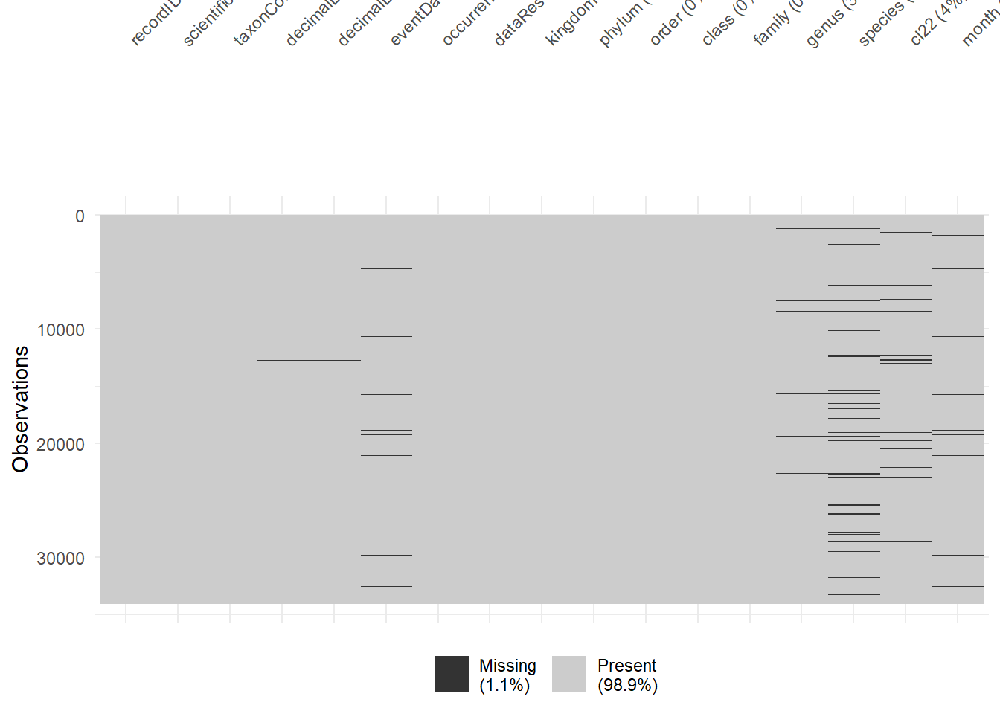

# packages
library(galah)
library(dplyr)
library(tidyr)
galah_config(email = "your-email-here") # ALA-registered email
geckos <- galah_call() |>
filter(doi == "https://doi.org /10.26197/ala.722b9bc1-34d9-4fe4-92e0-a93b041df1b1") |>
atlas_occurrences()5 Missing values
Biodiversity datasets often contain missing values. However, analysis and visualisation software can differ in their default response to missing values. They might drop missing values, provide a warning about them, or return an error. We don’t always know which response we’ll get, which can cause problems for us (possibly without our knowing) during analysis later on. This is why it’s important to clean missing values effectively.
Understanding the nature of missing data can also be useful for informing how you proceed with analysis. For instance, understanding whether missing data are random or not can influence what you choose to do with them (e.g. remove vs. impute), which in turn can affect the results of statistical models based on those datasets. Identifying where missing data occur in a dataset is therefore an important part of exploratory data analysis. This chapter will show you how to detect and remove missing values.
5.0.1 Prerequisites
In this chapter, we will use gecko occurrence data since 2009 from the ALA using galah.

5.1 Find missing values
There are numerous ways to identify missing values in your data. Here we illustrate a few ways with very different output types.
The summary() function (base r) provides summary statistics for each column in your table. The output includes the number of missing values in each column (NA's). Here, we can tell that there are missing values in the columns: decimalLatitude, decimalLongitude, eventDate, and month.
summary(geckos) recordID scientificName taxonConceptID decimalLatitude
Length:28514 Length:28514 Length:28514 Min. :-39.03
Class :character Class :character Class :character 1st Qu.:-31.98
Mode :character Mode :character Mode :character Median :-26.77
Mean :-24.32
3rd Qu.:-15.82
Max. : 44.76
NA's :153
decimalLongitude eventDate occurrenceStatus
Min. :-171.8 Min. :2009-01-01 00:00:00.00 Length:28514
1st Qu.: 132.4 1st Qu.:2013-11-13 00:00:00.00 Class :character
Median : 140.6 Median :2017-11-29 12:00:00.00 Mode :character
Mean : 139.2 Mean :2017-07-22 10:34:21.99
3rd Qu.: 146.9 3rd Qu.:2021-09-05 10:41:03.50
Max. : 177.4 Max. :2024-07-13 10:55:15.00
NA's :153 NA's :684
dataResourceName kingdom phylum order
Length:28514 Length:28514 Length:28514 Length:28514
Class :character Class :character Class :character Class :character
Mode :character Mode :character Mode :character Mode :character
class family genus species
Length:28514 Length:28514 Length:28514 Length:28514
Class :character Class :character Class :character Class :character
Mode :character Mode :character Mode :character Mode :character
cl22 month
Length:28514 Min. : 1.000
Class :character 1st Qu.: 4.000
Mode :character Median : 7.000
Mean : 6.718
3rd Qu.:10.000
Max. :12.000
NA's :675 The skimr package provides a fast and simple way to identify columns with missing values and quantify the amount of missing data. The output shows that there are 7 columns with missing values, shown in skim_variable, along with information about the number of missing values in n_missing and the proportion of non-missing values in complete_rate.
library(skimr)
geckos |>
skim() |>
filter(n_missing > 0) |>
as_tibble()# A tibble: 7 × 21
skim_type skim_variable n_missing complete_rate POSIXct.min
<chr> <chr> <int> <dbl> <dttm>
1 POSIXct eventDate 684 0.976 2009-01-01 00:00:00
2 character genus 726 0.975 NA
3 character species 2188 0.923 NA
4 character cl22 1265 0.956 NA
5 numeric decimalLatitude 153 0.995 NA
6 numeric decimalLongitude 153 0.995 NA
7 numeric month 675 0.976 NA
# ℹ 16 more variables: POSIXct.max <dttm>, POSIXct.median <dttm>,
# POSIXct.n_unique <int>, character.min <int>, character.max <int>,
# character.empty <int>, character.n_unique <int>,
# character.whitespace <int>, numeric.mean <dbl>, numeric.sd <dbl>,
# numeric.p0 <dbl>, numeric.p25 <dbl>, numeric.p50 <dbl>, numeric.p75 <dbl>,
# numeric.p100 <dbl>, numeric.hist <chr>The visdat package contains functions to visualise different aspects of dataframes. vis_miss() allows users to visualise the extent and location of missing data throughout a dataframe, with additional arguments for customising the visual output through clustering or sorting the missing data. The output provides a visual summary of which columns have missing data and relatively how many rows have missing values.
library(visdat)
vis_miss(geckos)
From here we can return all rows with a missing variable.
geckos |>
filter(if_any(everything(), is.na)) |>
select(scientificName, genus,
species, cl22, everything()) # reorder columns# A tibble: 3,604 × 17
scientificName genus species cl22 recordID taxonConceptID decimalLatitude
<chr> <chr> <chr> <chr> <chr> <chr> <dbl>
1 Gehyra Gehy… <NA> Sout… 001949e… https://biodi… -28.1
2 Gehyra Gehy… <NA> Nort… 001ab80… https://biodi… -16.1
3 Gehyra australis Gehy… Gehyra… Nort… 002f70c… https://biodi… -13.1
4 Lepidodactylus p… Lepi… Lepido… <NA> 00336d7… https://biodi… -8.81
5 Christinus Chri… <NA> Sout… 003e84f… https://biodi… -35.0
6 Gehyra Gehy… <NA> Quee… 0046174… https://biodi… -26.7
7 Gehyra nana Gehy… Gehyra… <NA> 005ea26… https://biodi… NA
8 GEKKONIDAE <NA> <NA> Quee… 007172d… https://biodi… -19.3
9 Gehyra Gehy… <NA> Nort… 0073628… https://biodi… -22.2
10 Gehyra punctata Gehy… Gehyra… <NA> 007a329… https://biodi… NA
# ℹ 3,594 more rows
# ℹ 10 more variables: decimalLongitude <dbl>, eventDate <dttm>,
# occurrenceStatus <chr>, dataResourceName <chr>, kingdom <chr>,
# phylum <chr>, order <chr>, class <chr>, family <chr>, month <dbl>Or we can specify a column to find rows with NA values (in this case column cl22).
geckos |>
filter(if_any(cl22, is.na)) |>
select(scientificName, genus,
species, cl22, everything()) # reorder columns# A tibble: 1,265 × 17
scientificName genus species cl22 recordID taxonConceptID decimalLatitude
<chr> <chr> <chr> <chr> <chr> <chr> <dbl>
1 Lepidodactylus p… Lepi… Lepido… <NA> 00336d7… https://biodi… -8.81
2 Gehyra nana Gehy… Gehyra… <NA> 005ea26… https://biodi… NA
3 Gehyra punctata Gehy… Gehyra… <NA> 007a329… https://biodi… NA
4 Christinus marmo… Chri… Christ… <NA> 009be60… https://biodi… -32.1
5 Cyrtodactylus Cyrt… <NA> <NA> 00a3522… https://biodi… -5.73
6 Hemidactylus fre… Hemi… Hemida… <NA> 00c6832… https://biodi… 1.29
7 Cyrtodactylus Cyrt… <NA> <NA> 00fdca4… https://biodi… -7.42
8 Cyrtodactylus sa… Cyrt… Cyrtod… <NA> 012e94f… https://biodi… -10.5
9 Christinus marmo… Chri… Christ… <NA> 0143054… https://biodi… -32.0
10 Hemidactylus fre… Hemi… Hemida… <NA> 01aae23… https://biodi… 16.0
# ℹ 1,255 more rows
# ℹ 10 more variables: decimalLongitude <dbl>, eventDate <dttm>,
# occurrenceStatus <chr>, dataResourceName <chr>, kingdom <chr>,
# phylum <chr>, order <chr>, class <chr>, family <chr>, month <dbl>5.2 Remove NA values
5.2.1 Missing coordinates
If you are intending to make a map or run spatial analyses, it’s a good idea to exclude records with missing coordinates. Missing coordinate data often leads to one of the following: a function error, an undesirable map, or the (unintentional) exclusion of data points (many of which you might wish to include in other maps or analyses).
It’s good practice to tally and identify rows that have missing data before excluding them. We can use the same method as above to identify the records with missing coordinates.
geckos |>
filter(if_any(c(decimalLongitude, decimalLatitude), is.na)) |>
count()# A tibble: 1 × 1
n
<int>
1 153geckos |>
filter(if_any(c(decimalLongitude, decimalLatitude), is.na)) |>
select(scientificName, decimalLongitude,
decimalLatitude, everything()) # reorder columns# A tibble: 153 × 17
scientificName decimalLongitude decimalLatitude recordID taxonConceptID
<chr> <dbl> <dbl> <chr> <chr>
1 Gehyra nana NA NA 005ea268… https://biodi…
2 Gehyra punctata NA NA 007a3298… https://biodi…
3 Heteronotia binoei NA NA 03a123ed… https://biodi…
4 Gehyra australis NA NA 05bef070… https://biodi…
5 Gehyra occidentalis NA NA 0846001e… https://biodi…
6 GEKKONIDAE NA NA 0a078043… https://biodi…
7 Gehyra xenopus NA NA 0ad77ff9… https://biodi…
8 Gehyra occidentalis NA NA 0c5390b2… https://biodi…
9 Gehyra punctata NA NA 11bbc940… https://biodi…
10 Gehyra nana NA NA 12d9f935… https://biodi…
# ℹ 143 more rows
# ℹ 12 more variables: eventDate <dttm>, occurrenceStatus <chr>,
# dataResourceName <chr>, kingdom <chr>, phylum <chr>, order <chr>,
# class <chr>, family <chr>, genus <chr>, species <chr>, cl22 <chr>,
# month <dbl>If we decide we are happy to exclude these records, we can use drop_na() to remove missing values from our dataset.
geckos_filtered <- geckos |>
drop_na(decimalLongitude, decimalLatitude)
We can check that drop_na() worked correctly by comparing the number of records in our initial data and our filtered data, specifically that geckos_filtered is smaller by the same number of NA values we found above.
nrow(geckos) - nrow(geckos_filtered)[1] 1535.3 Taxonomic values
5.3.1 Missing higher rank
Sometimes data can be missing information in columns with higher taxonomic rankings, even if observations have been taxonomically identified down to the species level. In this case, the goal isn’t only to remove the missing values, but to fill in the gaps with the correct information.
As an example, we’ll use a slightly modified geckos_missing dataset with some missing data added into the higher columns1. Below is a preview, and you’ll notice that there are NA values in the class and family columns as you skim across the pages.
Code
set.seed(87654) # for reproducibility
# randomly replace some row's class & family names with NAs
geckos_missing <- geckos |>
mutate(class = replace(class,
sample(row_number(),
size = ceiling(0.15 * n())),
NA),
family = replace(family,
sample(row_number(),
size = ceiling(0.15 * n())),
NA))geckos_missing |>
select(scientificName, class, family, genus, species, everything())# A tibble: 28,514 × 17
scientificName class family genus species recordID taxonConceptID
<chr> <chr> <chr> <chr> <chr> <chr> <chr>
1 Gehyra dubia Reptilia Gekkoni… Gehy… Gehyra… 00002a3… https://biodi…
2 Christinus marmoratus Reptilia Gekkoni… Chri… Christ… 0002970… https://biodi…
3 Heteronotia binoei Reptilia Gekkoni… Hete… Hetero… 0007fcc… https://biodi…
4 Gehyra australis Reptilia Gekkoni… Gehy… Gehyra… 00087c0… https://biodi…
5 Hemidactylus frenatus Reptilia Gekkoni… Hemi… Hemida… 000c00b… https://biodi…
6 Heteronotia binoei Reptilia Gekkoni… Hete… Hetero… 000cd36… https://biodi…
7 Christinus marmoratus Reptilia Gekkoni… Chri… Christ… 0018b78… https://biodi…
8 Gehyra Reptilia Gekkoni… Gehy… <NA> 001949e… https://biodi…
9 Heteronotia binoei Reptilia Gekkoni… Hete… Hetero… 0019729… https://biodi…
10 Gehyra Reptilia Gekkoni… Gehy… <NA> 001ab80… https://biodi…
# ℹ 28,504 more rows
# ℹ 10 more variables: decimalLatitude <dbl>, decimalLongitude <dbl>,
# eventDate <dttm>, occurrenceStatus <chr>, dataResourceName <chr>,
# kingdom <chr>, phylum <chr>, order <chr>, cl22 <chr>, month <dbl>If you have a list of taxonomic names with complete ranking information from your preferred taxonomic naming authority, you can use this information to back-fill your missing data columns. In our case, we can use names from ALA’s taxonomic backbone.
First we’ll get the complete list of Gekkonidae species taxonomic rank names using galah.
geckos_species_list <- galah_call() |>
identify("gekkonidae") |>
atlas_species()
head(geckos_species_list)# A tibble: 6 × 11
taxon_concept_id species_name scientific_name_auth…¹ taxon_rank kingdom phylum
<chr> <chr> <chr> <chr> <chr> <chr>
1 https://biodive… Heteronotia… (Gray, 1845) species Animal… Chord…
2 https://biodive… Christinus … (Gray, 1845) species Animal… Chord…
3 https://biodive… Gehyra vari… (Duméril & Bibron, 18… species Animal… Chord…
4 https://biodive… Hemidactylu… Duméril & Bibron, 1836 species Animal… Chord…
5 https://biodive… Gehyra dubia (Macleay, 1877) species Animal… Chord…
6 https://biodive… Gehyra vers… Hutchinson, Sistrom, … species Animal… Chord…
# ℹ abbreviated name: ¹scientific_name_authorship
# ℹ 5 more variables: class <chr>, order <chr>, family <chr>, genus <chr>,
# vernacular_name <chr>To match the complete names in geckos_species_list with the missing names in geckos_missing, we can use a strategy of match-and-merge.
Note
For some taxonomic groups like birds this will not work because subgenus is almost always included in scientificName. In this scenario, you might need to use more advanced methods like those in the Taxonomic Validation chapter to match and back-fill taxonomic information.
Using a reference column, we’ll merge our complete names data to our missing data. The information in the species_name column of geckos_species_list contains both the genus and species names; this is just like the scientificName column of our geckos_missing dataset2. We can use these columns as our reference columns.
geckos_species_list |> select(species_name) |> slice(10:15) # see sample of data# A tibble: 6 × 1
species_name
<chr>
1 Lepidodactylus lugubris
2 Gehyra montium
3 Gehyra lazelli
4 Nactus pelagicus
5 Nactus eboracensis
6 Gehyra punctata geckos_missing |> select(scientificName) |> slice(10:15) # see sample of data# A tibble: 6 × 1
scientificName
<chr>
1 Gehyra
2 Gehyra versicolor
3 Gehyra variegata
4 Hemidactylus frenatus
5 Christinus marmoratus
6 Lepidodactylus lugubrisNow we’ll select the subset of columns from geckos_species_list that we wish to join with geckos_missing (and our reference column, species_name).
list_subset <- geckos_species_list |>
select(species_name, class, family)We can use left_join() to merge list_subset to geckos_missing. Records that are identified at least down to the family level now have the correct rank information in the class_new and family_new columns [^3].
This hasn’t worked for every row, however, because scientificName contains the name of the lowest taxonomic rank the occurrence is identified to. Names like Christinus and Gehyra are genus names, so in these cases scientificName won’t match our reference species_name column!
geckos_missing |>
left_join(list_subset,
by = join_by(scientificName == species_name),
suffix = c("_old", "_new")) |>
select(scientificName, class_old, family_old, class_new, family_new) |>
slice(20:30) # see sample of data# A tibble: 11 × 5
scientificName class_old family_old class_new family_new
<chr> <chr> <chr> <chr> <chr>
1 Gehyra australis Reptilia <NA> Reptilia Gekkonidae
2 Lepidodactylus pumilus Reptilia Gekkonidae Reptilia Gekkonidae
3 Heteronotia binoei Reptilia Gekkonidae Reptilia Gekkonidae
4 Christinus marmoratus Reptilia Gekkonidae Reptilia Gekkonidae
5 Christinus Reptilia Gekkonidae <NA> <NA>
6 Heteronotia binoei Reptilia Gekkonidae Reptilia Gekkonidae
7 Nactus eboracensis Reptilia Gekkonidae Reptilia Gekkonidae
8 Heteronotia binoei Reptilia Gekkonidae Reptilia Gekkonidae
9 Gehyra Reptilia Gekkonidae <NA> <NA>
10 Heteronotia binoei <NA> <NA> Reptilia Gekkonidae
11 Christinus marmoratus Reptilia Gekkonidae Reptilia Gekkonidae5.3.2 Insufficient taxonomic identification
If a record is not identified down to the necessary taxonomic level required for your analysis (e.g. down to species or sub-species level), then the record should be removed.
One handy tip you can use with the galah package is to add the column taxonRank. This column usefully shows the taxonomic level of names in scientificName3. taxonRank can be useful because we can filter to only include records down to a specific rank.
geckos_rank <- galah_call() |>
identify("gekkonidae") |>
filter(year == 2013) |>
select(group = "basic",
taxonRank) |> # add column
atlas_occurrences()
# return records identified to species level
geckos_rank |>
filter(taxonRank == "species") |>
select(taxonRank, scientificName, everything()) # reorder columns# A tibble: 1,825 × 9
taxonRank scientificName recordID taxonConceptID decimalLatitude
<chr> <chr> <chr> <chr> <dbl>
1 species Gehyra variegata 001c2b9f-34c8… https://biodi… -22.7
2 species Heteronotia binoei 0069dbdc-3b6a… https://biodi… -16.4
3 species Gehyra versicolor 0076a197-d0ee… https://biodi… -21.5
4 species Gehyra punctata 007a3298-fc44… https://biodi… NA
5 species Heteronotia binoei 00a0405a-7852… https://biodi… -12.6
6 species Gehyra chimera 00aaed8f-218c… https://biodi… -17.1
7 species Heteronotia binoei 00b95296-ff57… https://biodi… -12.7
8 species Christinus marmoratus 00c15ed1-873e… https://biodi… -35.4
9 species Christinus marmoratus 00d886f8-1ee4… https://biodi… -35.0
10 species Gehyra variegata 00e80fcb-843d… https://biodi… -29.9
# ℹ 1,815 more rows
# ℹ 4 more variables: decimalLongitude <dbl>, eventDate <dttm>,
# occurrenceStatus <chr>, dataResourceName <chr>However, it is still possible to filter records using the tools above without using the taxonRank column. In this case we remove records not identified down to the genus.
geckos_filtered <- geckos |>
drop_na(genus) |>
select(scientificName, genus, species, everything()) # reorder columns
geckos_filtered# A tibble: 27,788 × 17
scientificName genus species recordID taxonConceptID decimalLatitude
<chr> <chr> <chr> <chr> <chr> <dbl>
1 Gehyra dubia Gehyra Gehyra… 00002a3… https://biodi… -24.1
2 Christinus marmoratus Christ… Christ… 0002970… https://biodi… -34.7
3 Heteronotia binoei Hetero… Hetero… 0007fcc… https://biodi… -12.6
4 Gehyra australis Gehyra Gehyra… 00087c0… https://biodi… -14.4
5 Hemidactylus frenatus Hemida… Hemida… 000c00b… https://biodi… -27.5
6 Heteronotia binoei Hetero… Hetero… 000cd36… https://biodi… -13.3
7 Christinus marmoratus Christ… Christ… 0018b78… https://biodi… -36.1
8 Gehyra Gehyra <NA> 001949e… https://biodi… -28.1
9 Heteronotia binoei Hetero… Hetero… 0019729… https://biodi… -12.7
10 Gehyra Gehyra <NA> 001ab80… https://biodi… -16.1
# ℹ 27,778 more rows
# ℹ 11 more variables: decimalLongitude <dbl>, eventDate <dttm>,
# occurrenceStatus <chr>, dataResourceName <chr>, kingdom <chr>,
# phylum <chr>, order <chr>, class <chr>, family <chr>, cl22 <chr>,
# month <dbl>
5.4 Summary
This chapter showed ways to find and remove different types of missing records from your dataset. It’s important to note that there might not be a single cleaned dataset without any missing values. You might find that in the same workflow, you will clean your dataset in multiple ways to preserve rows that are missing some, but not all, information. For example, some records may have complete taxonomic identification but lack spatial coordinates, while others have spatial coordinates but lack taxonomic information. Depending on the type of analysis you intend to perform, you may need to adjust your data cleaning approach accordingly.
In the next chapter we will address working with strings (character sequences). Strings often involve correcting for things like typos or extra spacing that are difficult to pick up at a first glance.
The Atlas of Living Australia matches taxonomic names when data is ingested from data providers. This process means that it’s very rare for a species to be missing higher taxonomic rank names. This might not be the case for other data sources, though!↩︎
This column contains the name of the lowest taxonomic rank the occurrence is identified to.↩︎
This column contains the name of the lowest taxonomic rank the occurrence is identified to.↩︎